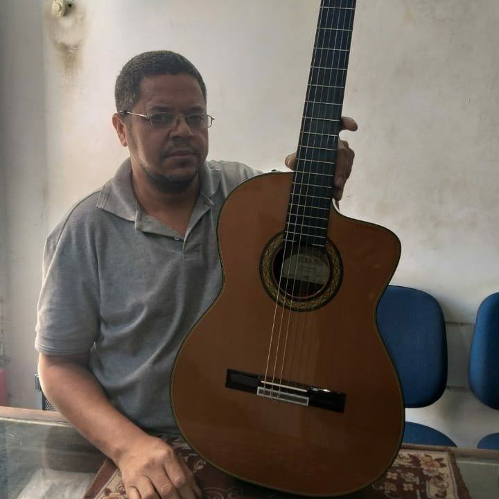
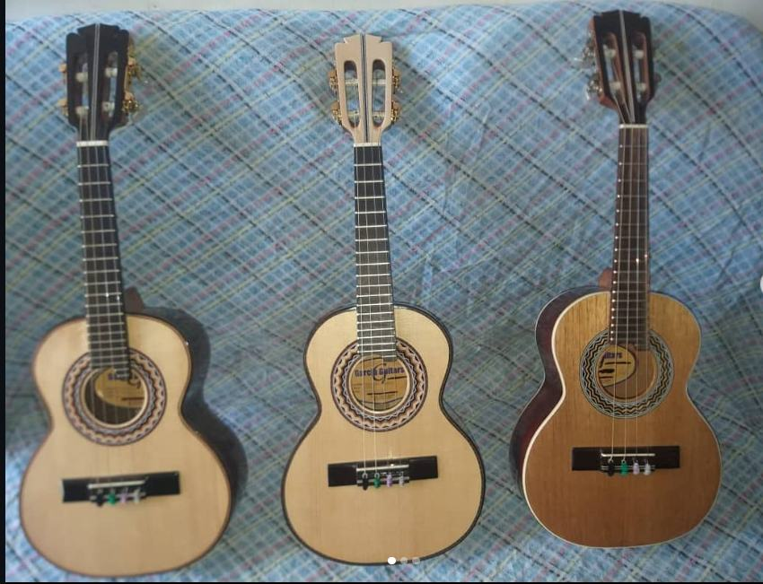
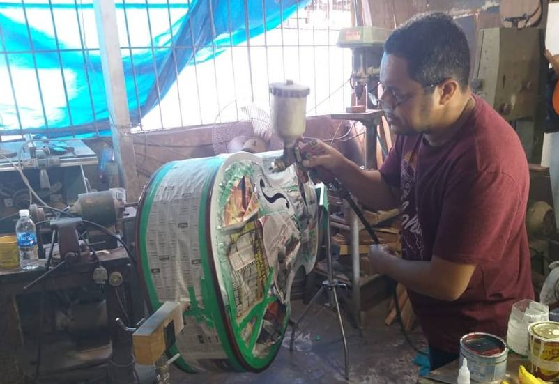
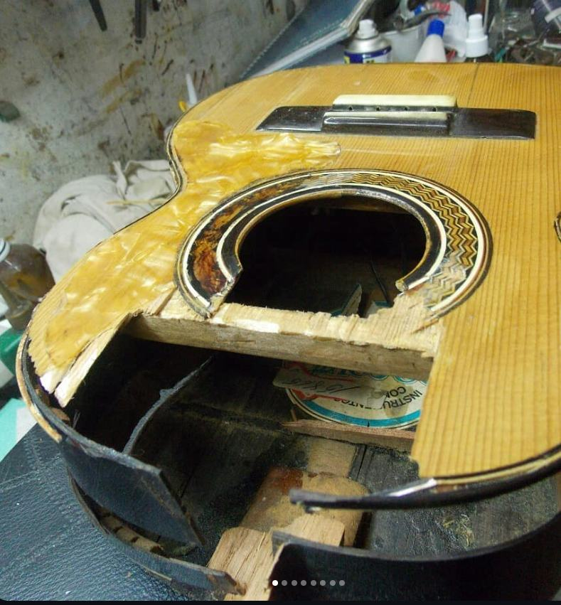
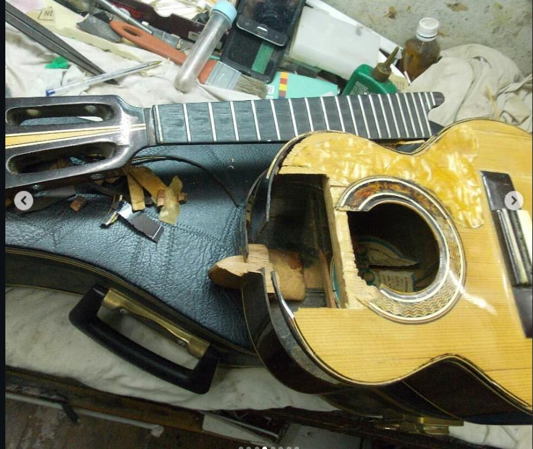
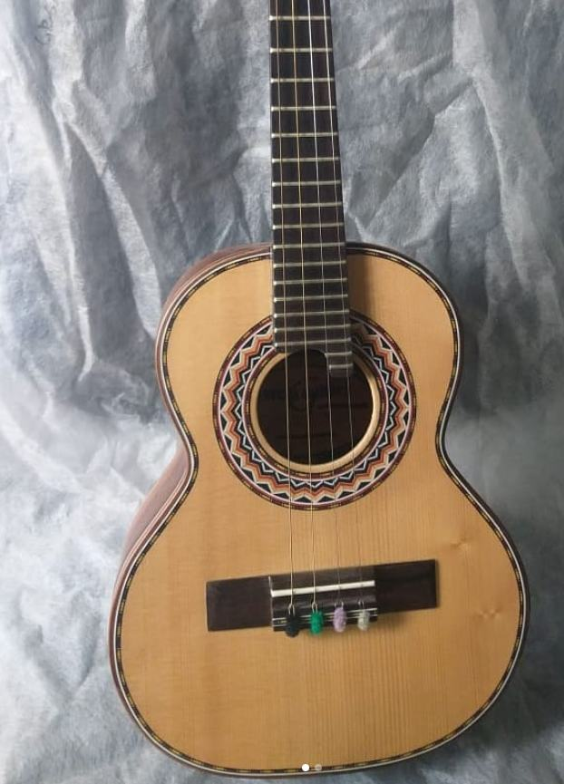
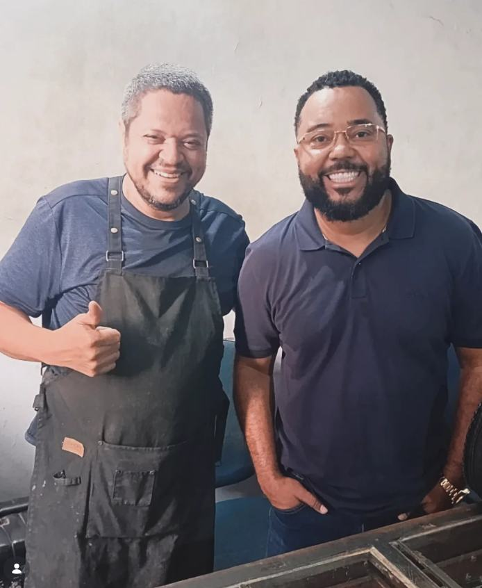
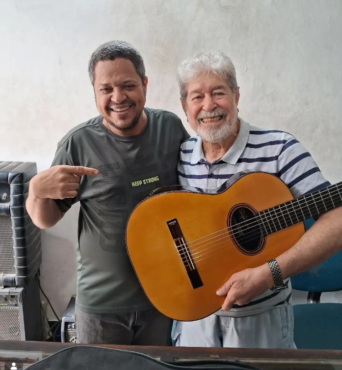

Quebrou feio? Está com problema? O Lindomar resolve.
Mais de 30 anos de experiência em consertos, restauração e construção de violões e cavaquinhos na oficina do luthier Lindomar, no Centro do Rio de Janeiro. Reparo de todos os instrumentos de cordas.

O que a oficina faz

Construção sob encomenda
Violões e cavaquinhos feitos na bancada, com acabamento e rosácea à mão. Cada instrumento sai da oficina regulado e pronto para tocar.
Encomendar um instrumentoReparo de instrumentos de cordas
Violão, cavaquinho, guitarra, contrabaixo, banjo, bandolim, viola, violino e outros.
- Parte elétrica
- Carcaça e estrutura
- Cupim
- Regulagem e manutenção
- Troca de cordas
- Limpeza

Quebrou feio? Ainda dá jeito.
Tampo aberto, lateral quebrada, instrumento antigo que ninguém queria mexer. A oficina recupera a estrutura e devolve o instrumento para a roda.


Restauração em andamento na bancada. Mais reformas no Instagram da oficina.
Quem é o Lindomar
Lindomar começou aos 16 anos na Garcia, uma das primeiras oficinas de conserto de violões do Rio de Janeiro. Entrou como lixador, aprendeu colagens, parte elétrica e troca de trastes, e logo passou aos serviços pesados: tampo, lateral, fundo, braço e escala.
Foi consertando violões que descobriu que podia fazê-los. O primeiro instrumento que construiu foi um contrabaixo. Depois de sete anos na oficina, passou um tempo em uma loja de instrumentos e montou uma bancada no quintal de casa. Cinco anos depois, voltou para a Garcia, onde trabalha até hoje.

Das cinzas do Museu Nacional
Lindomar participou da restauração de instrumentos feitos a partir dos escombros do Museu Nacional, em trabalho com a equipe do projeto mostrado pelo Fantástico, da Globo.
Assistir a reportagem no g1Parceiro do Do Souto, fabricante carioca de instrumentos artesanais desde 1929.


Fale com o Lindomar
Mande uma foto do instrumento pelo WhatsApp que ele diz o que dá para fazer.
- Oficina
- Rua dos Inválidos, 19, Centro, Rio de Janeiro
- Abrir conversa
- @lindomarluthier